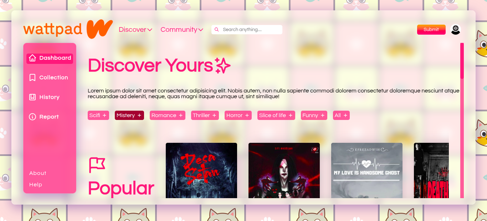
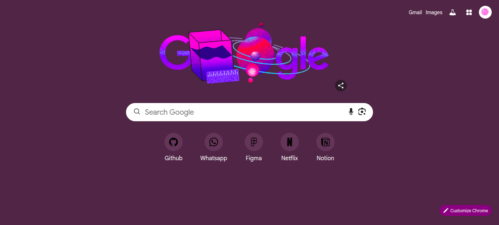
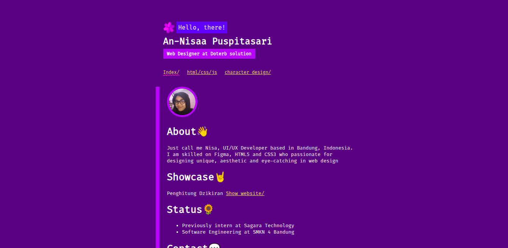

This page showcases selected past projects completed for clients, companies, and personal initiatives. Some of these works are no longer publicly available due to NDAs, infrastructure transitions and account migrations.
While full source code and live links may not be accessible, the screenshots and descriptions below provide a brief overview of each project.

Apple UI Clone
Interface recreation inspired by Apple’s product pages, focusing on typography, spacing systems, and visual hierarchy.

InvestmentPal
Revamped a legacy Rails UI with pixel-perfect Figma implementation under technical constraints. This success led me to be a permanent full-time role.

Sucre
Designed a modern prototype focused on layout clarity, structured navigation, and intuitive user flow.

Rediprint
Created a structured and professional website interface design for a printing services business to improve credibility and accessibility.

IEU Sahrul Gunawan
Contributed to full UI layout design and interactive prototyping for a digital campaign platform.

Juarta
Redesigned the interface of a TOEFL preparation platform based on competitor analysis and usability improvements.

Temasline
Created a demo homepage that won client approval for ongoing collaboration. After the original designer resigned, I designed and built another UI pages (excluding the homepage). Live designs: temasline.com.

InvestX
Developed reusable UI components using React, Sass, and Material UI to support feature expansion.

Jack Don’t Swim
Designed and developed a professional web profile for a rental product organization, delivering a clean and brand-aligned online presence.

Malasugi
Led end-to-end design and development of a responsive web interface, from research and wireframing to deployment.

PODC
Designed 8+ high-fidelity screens in Figma for a proposed client project. Full implementation restricted due to NDA limitations.

Pitakon Landing Page
A clean, responsive landing page highlighting key features, user benefits, and onboarding flow.

PN Painan
Built a structured website template inspired by local institutional platforms with emphasis on clarity and hierarchy.

AJK Printing
Developed a service profile website presenting company information, offerings, and contact interface.

Wattpad
A digital library interface concept showcasing categorized book displays and structured browsing experience.

Google Search Engine
A clone recreation of a google search engine homepage to explore minimalist layout control.

My Legacy Portfolio
A simple, unique and structured portfolio built during early learning stages, emphasizing semantic HTML and layout fundamentals.
 Graphic Design
Graphic Design  Web Development
Web Development  Python
Python  Illustration & Icon Design
Illustration & Icon Design